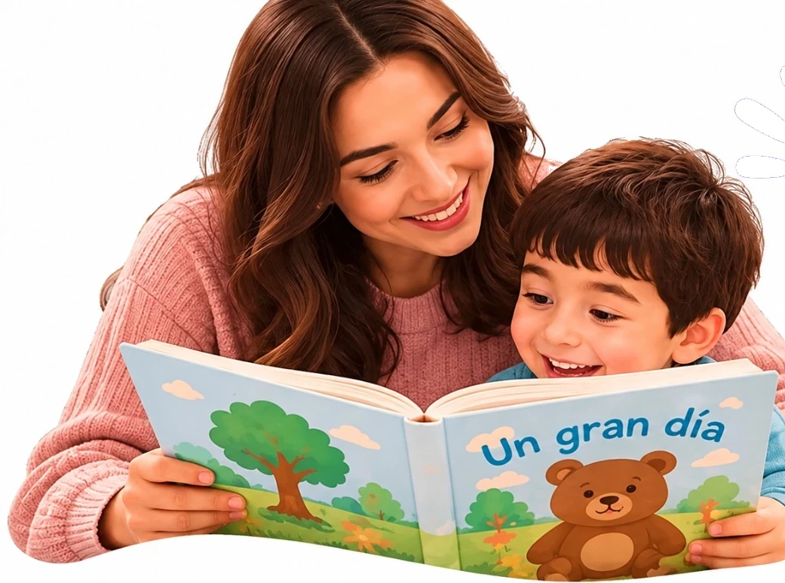
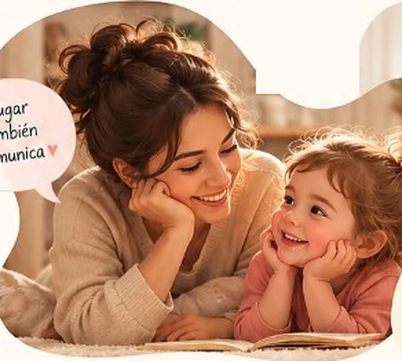
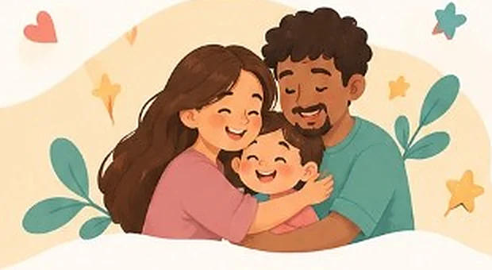

Actividad destacada
El cuento con pausa
Mirar, imaginar y conversar
Una historia, muchas oportunidades para comunicarse.
Ver actividad El cuento con pausa
Acompaña el desarrollo de la comunicación de tu hijo o hija con actividades sencillas, divertidas y basadas en la vida cotidiana.
Explorar actividades
Jugar también comunica
En casa también se aprende a comunicar
Cada etapa tiene grandes oportunidades para comunicarse.
Jugar, comer, vestirse y mirar un cuento pueden convertirse en oportunidades para comunicarse. Encuentra ideas para aprovechar esos momentos sin preparar una clase.
Actividad destacada
Mirar, imaginar y conversar
Una historia, muchas oportunidades para comunicarse.
Ver actividad El cuento con pausa

Cada momento en casa es una oportunidad para conectar, explorar y crecer juntos.